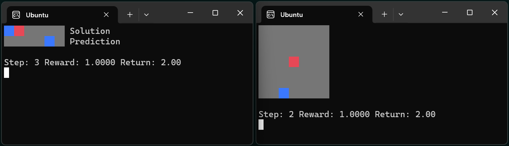

PufferLib 0.6: üê°üåä An Ocean of Environments for Learning Pufferfish#
Ocean is a small suite of environments that train from scratch in 30 seconds and render in a terminal. Each environment is a sanity check for a common implementation bug. Use Ocean as a quick verification test whenever you make small code changes.
{kind=link}
Memory: The agent is shown one binary token at a time and must recite them back after a pause. Do not make the sequence too long or you start testing credit assignment.
Stochasticity: The agent is rewarded for learning a particular nondeterministic action distribution. Do not use an architecture with memory or the agent can solve the task without stochasticity.
Exploration: The agent is rewarded for guessing a specific binary sequence. Do not tune your entropy coefficients higher than you would use in your actual environments, since that is the point of the test.
Bandit: The agent is rewarded for solving a multiarmed bandit problem. This environment is included for historical importance. Any reasonable implementation should solve the default setting.
Squared: The agent is rewarded for moving to targets that spawn around the edges of a square. There are settings to test memory, exploration, and stochasticity separately or jointly to help you prod at deeper issues with your implementation.
This project is heavily inspired by BSuite, a DeepMind project with similar if more benchmarky goals. BSuite was a bit too heavy for my liking and didn’t fit the niche of a quick and portable verification suite.
I had a few issues designing these. The memory task is apparently a standard RNN copying task (I would be surprised if it weren’t). But it’s a bit different in an RL context because you still have to learn credit assignment. I don’t think there is a way to fully isolate learning only memory outside of a simple 1-step problem. Try increasing the memory sequence length or delay and you will quickly find that the problem gets harder to learn.
The exploration environment is the only one that just worked. You can increase the password length and the problem gets harder to learn at about the rate you would expect. It’s just a guess and check, so once you happen to get the password right once, the goal is to learn from that single instance as much as possible. Any prioritized replay would trivialize the problem.
The stochastic environment took the longest. Initially, I was looking for one where the optimal policy was still stochastic and nontrivial even if the agent had memory. I could not figure out how to make one of these, and Twitter seems to think it’s impossible. They’re probably right, though you might be able to alter the setup conditions a bit, still test for the same thing, and have something that works better. For now, this is a quick and consistent test.
I wrote the bandit environment earlier in the project, and it seems kind of useful, so I left it in the release. Probably a good idea to have at least some version of a problem this historically important easily accessible in PufferLib.
I wrote Squared over the summer. I’m rather fond of it as a test environment, since it is fairly scalable. You spawn at the center of a square and targets spawn around the outside. You get a reward the first time you hit each target and are teleported to the center whenever you hit a target. This means that the optimal policy is stochastic: you place equal probability on moving towards each target and then deterministically move towards the target you have selected. It’s interesting because the optimal policy is stochastic in some states and deterministic in others. You can also turn the problem into a memory test by using a recurrent network. In any event, it’s similar to the bandit problem in that it combines elements of the simpler tests, but it’s a bit more tunable and interpretable.
Let me know if you have other ideas for useful test environments. Lately, I’ve landed on either very simple or very complex environments as being the most useful for research. Many of the tasks in the middle (looking at you Atari) are too slow to be useful as quick tests and too simple to test interesting ideas.
PufferLib 0.5: A Bigger EnvPool for Growing Puffers#
This is what reinforcement learning does to your CPU utilization:
You wouldn’t pack a box this way, right? With PufferLib 0.5, we are releasing a Python implementation of EnvPool to solve this problem. TL;DR: ~20% performance improvement across most workloads, up to 2x for complex environments, and native multiagent support.
If you just want the enhancements, you can pip install -U pufferlib. But if you’d like to see a bit behind the curtain, read on!
The Simulation Crisis#
You want to do some RL research, so you install Atari. Say it runs at 1000 steps/second on 1 core and 5000 steps/second on 6 cores. Now, you decide you want to work on a more interesting environment and happen upon Neural MMO, a brilliant project that must have been developed by a truly fantastic team. It runs at 1500 steps/second – faster than Atari! So you scale it up to 6 cores and it runs at … 1800 steps per second. What gives?
The problem is that environments simulated on different cores do not run at the same speed. Even if they did, many modern CPUs have cores that run at different speeds. Parallelization overhead is mostly the sum of: - Launching/synchronization overhead. This is roughly 0.1 ms per process and is linear in the number of processes. At ~100 steps per second, you can ignore it. At >10,000 steps/second, it is the main limiting factor. - Environment variance. This is defined by the ratio mu/std of the environment simulation time and scales with the square root of the number of processes. For 24 processes, 10% std is 20% overhead and 100% std is 300% overhead. - Different core speeds. Many modern CPUs, especially Intel desktop series processors, feature additional cores that are ~20% slower than the main cores. - Model latency. This is the time taken to transfer observations to GPU, run the model, and transfer actions to CPU. It is not technically part of multiprocesssing overhead, but naive implementations will leave CPUs idle during model inference.
As a rule of thumb, simple RL environments have < 10% variance because the code is always simulating roughly the same thing. Complex environments, especially ones with variable numbers of agents, can have > 100% variance because different code runs depending on the current state. On the other hand, if your environment has 100 agents, you are effectively running 100x fewer simulations for the same data, so launching/synchronization overhead is lower.
The Solution#
Run multiple environments per process if you have > ~2000 sps environment with variance < ~10%. This will reduce the impact of launching/synchronization overhead and also reduces variance because you are summing over samples. In PufferLib, we typically enable this only for environments > ~5000 sps because of interactions with the optimizations below.
Simulate multiple buffers of environments so that one buffer is running while your model is processing observations from the other. This technique was introduced by https://github.com/alex-petrenko/sample-factory and does not speed up simulation, but it allows you to interleave simulations from two sets of environments. It’s a good trick, but it is superseded by the final optimization, which is faster and simpler.
Run a pool of environments and sample from the first ones to finish stepping. For example, if you want a batch of 24 observations, you might run 64 environments. At each step, the 24 for which you have computed actions are going to take a while to simulate, but you can still select the fastest 24 from the other 64-24=40 environments. This technique was introduced by https://github.com/sail-sg/envpool and is massively effective, but the original implementation is only for specific C/C++ environments. PufferLib’s implementation is in Python, so it is slower, but it works for arbitrary Python environments and includes native multiagent support.
Experiments#
To evaluate the performance of different backends, I am using a 13900k (24 cores) on a max specced Maingear desktop running a minimal Debian 12 install. We test 9 different simulated environments: 1e-2 to 1-4 mean delay with 0-100% delay std. For each environment, we spawn 1, 6, 24, 96, and 192 processes for each backend tested (Gymnasium’s and Pufferlib’s serial and multiprocessing implementations + Pufferlib’s pool). We also have Ray implementations compatible with our pooling code, but that will be a separate post. Additionally, PufferLib implementations sweep over (1, 2, 4) environments per process and PufferLib pool will compute 24 observations at a time. We do not consider model latency, which can yield another 2x relative performance for pooling on specific workloads.
9 groups of bars, each for one environment. 5 groups of bars per environment, each for a specific number of processes. The serial Gymasium/PufferLib experiments match in all cases. The best PufferLib settings are 10-20% faster than the best Gymasium settings for all workloads and can be up to 2x faster for environments with a high standard deviation in important cases (for instance, you may not want to run 192 copies of heavy environments). Again, this is before even considering the time saved by interleaving with the model forward pass.
All of the implementations start to dip ~10% at 1,000 steps/second and ~50% at 10,000 steps/second. To make absolutely sure that this overhead is unavoidable, I reimplemented the entire pool architecture as minimally as possible, without any of the environment wrapper or data transfer overhead:
SPS: 10734.36 envs_per_worker: 1 delay_mean: 0 delay_std: 0 num_workers: 1 batch_size: 1 sync: False SPS: 11640.42 envs_per_worker: 1 delay_mean: 0 delay_std: 0 num_workers: 1 batch_size: 1 sync: True SPS: 32715.65 envs_per_worker: 1 delay_mean: 0 delay_std: 0 num_workers: 6 batch_size: 6 sync: False SPS: 27635.31 envs_per_worker: 1 delay_mean: 0 delay_std: 0 num_workers: 6 batch_size: 6 sync: True SPS: 22681.48 envs_per_worker: 1 delay_mean: 0 delay_std: 0 num_workers: 24 batch_size: 6 sync: False SPS: 26183.73 envs_per_worker: 1 delay_mean: 0 delay_std: 0 num_workers: 24 batch_size: 24 sync: False SPS: 30120.75 envs_per_worker: 1 delay_mean: 0 delay_std: 0 num_workers: 24 batch_size: 6 sync: True
As it turns out, Python’s multiprocessing caps around 10,000 steps per second per worker. There is still room for improvement by running more environments per process, but at this speed, small optimizations to the data processing code start to matter much more.
Technical Details and Gotchas#
PufferLib’s vectorization library is extremely concise – around 800 lines for serial, multiprocessing, and ray backends with support for PufferLib’s Gymnasium and PettingZoo wrappers. Adding envpool only required changing around 100 lines of code but required a lot of performance testing: Don’t use multiprocessing.Queue. There’s no fast way to poll which processes are done. Instead, use multiprocessing.Pipe and poll with selectors. I have not seen noticeable overhead from this in any of my tests. Don’t use time.sleep(), as this will trigger context switching, or time.time(), as this will include time spent on other processes. Use time.process_time() if you want an equal slice per core or count to ~150M/second (time it on your machine) if you want a fixed amount of work.
The ray backend was extremely easy to implement thanks to ray.wait(). It is unfortunately too slow for most environments, but I wish standard multiprocessing used the Ray API, if not the architecture. The library itself has some cleanup issues that can cause crashes during heavy performance tests, which is why results are not included in this post.
There’s one other thing I want to mention for people looking at the code. I was doing some experimental procedural stuff testing different programming paradigms, so the actual class interfaces are in __init__. It’s pretty much equivalent to one subclass per backend.
PufferLib 0.4: Ready to Take on Bigger Fish#
PufferLib 0.4 is out now! Make your RL environments and libraries play nice with one-line wrappers, pain-free vectorization, and more.
- New Features
One-line wrappers for your Gym and PettingZoo environments
Serial, Multiprocessing, and Ray vectorization backends
PufferTank, a container preloaded with PufferLib and common environments
More importantly, we have rewritten the entire core for simplicity and extensibility. While this is not a flashy new feature, you will notice significantly fewer rough edges working with PufferLib. For example, your Gym environments are no longer converted to PettingZoo environment internally, and your discrete action spaces are no longer returned as MultiDiscrete: WYSIWYG.
Emulation#
Previously, PufferLib required you to wrap your environment class in a binding, which then provided creation and additional utilities. Now, you pass in a Gym/PettingZoo environment and get back a Gym/PettingZoo environment. All of the benefits described in our 0.2 blog post are included.
import pufferlib.emulation
import nle, nmmo
def nmmo_creator():
return pufferlib.emulation.PettingZooPufferEnv(env_creator=nmmo.Env)
def nethack_creator():
return pufferlib.emulation.GymPufferEnv(env_creator=nle.env.NLE)
Vectorization#
Previously, PufferLib’s vectorization expected a binding object. Now, you pass it an environment creation function (as above) or a Gym/PettingZoo PufferEnv, if you prefer to subclass directly. Compared to 0.2 PufferLib includes Serial and Multiprocessing backends, in addition to Ray.
import pufferlib.vectorization
import nmmo
vec = pufferlib.vectorization.Multiprocessing # Or Serial or Ray
envs = vec(nmmo_creator, num_workers=2, envs_per_worker=2)
# Synchronous API
obs = envs.reset()
# Async API
envs.async_reset()
obs, _, _, _ = envs.recv()
PufferTank#
Many common RL environments are notoriously hard to set up and use. PufferTank provides containers with several such popular environments tested to work with PufferLib. These are preloaded onto base images so you can build the container over a coffee break.
Policies#
Previously, PufferLib required you to subclass a PyTorch base class for your models. Now, you can use vanilla PyTorch policies. We still provide a base class as an option, which allows you to use another of our wrappers to handle recurrence for you. Pass your model to our wrappers and we will convert to framework-specific APIs for you.
cleanrl_policy = pufferlib.frameworks.cleanrl.Policy(policy)
Error Handling#
Previously, PufferLib applied expensive runtime checks to all environments by default. These could be disabled by running with -O. This was inconvenient and easily forgotten. Now, these checks only run once at startup with negligible overhead. Thus far, we have observed no bugs with the new version that would have been caught by the previous checks.
Miscellaneous#
We have added sane default installations, setup, and policies for several more environments. Check our home page for an updated list.
The new environment and policy changes means that PufferLib no longer breaks serialization. This is useful for saving environment and model states.
We have written an optimized flatten and unflatten function for handling observation and actions. This was previously a bottleneck for environments with complex spaces. Expect a separate post on this, since it was an interesting case study for Python extension options.
We have an experimental custom CleanRL derivative to correctly handle environments with variable numbers of agents, without training on padding. Doing this simply has been a longstanding challenge in RL. More on this once it is more stable.
Join us on Discord and tell us your pain points. We might just fix them.
PufferLib 0.2: Ready to Take on the Big Fish#
PufferLib’s goal is to make reinforcement learning on complex game environments as simple as it is on Atari. We released version 0.1 as a preliminary API with limited testing. Now, we’re excited to announce version 0.2, which includes dozens of bug fixes, better testing, a streamlined API, and a working demo on CleanRL.
Problem Statement#
To understand the need for PufferLib, let’s consider the difference between Atari and one of the most complex game environments out there: Neural MMO. Atari is deterministic, fully observable, and single-agent, with relatively short time horizons and simple observation and action spaces. In contrast, Neural MMO is nondeterministic, only partially observable, and features large and variable agent populations, with longer time horizons and hierarchical observation and action spaces.
Most RL frameworks are designed with Atari in mind, resulting in limited support for multiple agents, complex observation and action spaces, and a bias towards small models with fewer than 10 million parameters. This makes it challenging for researchers to tackle more complex environments and leads many to focus exclusively on Atari and other simple environments.
CleanRL Demos#
For our initial demo, we ran Neural MMO on CleanRL’s single-file Proximal Policy Optimization (PPO) implementation designed for Atari by replacing only the vectorized environment creation code, without considering any of Neural MMO’s complexities. For ease of experimentation, we have since wrapped CleanRL in a function and added additional logging. The latest version also includes double-buffering, an asynchronous environment simulation approach from the SampleFactory paper. To ensure the accuracy of our results, we maintain a public WandB profile with current baselines, including Atari results as a correctness check.
PufferLib Emulation#
The key idea behind PufferLib is emulation, or wrapping a complex environment to appear simple, thereby “emulating” an Atari-like game from the perspective of the reinforcement learning framework. This approach handles environment complexity in a wrapper layer instead of natively by the reinforcement learning framework, allowing us to use simple reinforcement learning code with an internally complex environment.
We will use Neural MMO as a running example here. Neural MMO has hierarchical observation and action spaces, while most reinforcement learning frameworks expect fixed size vectors or tensors. PufferLib flattens observations and action spaces to conform to this expectation, without losing any structural information: both observations and actions are unflattened right before they are required. Reinforcement learning frameworks also expect vectorized environments to have a constant number of agents. PufferLib pads Neural MMO’s variable population to a fixed number of agents and also ensures they appear in the same sorted order. Finally, PufferLib also handles some subtleties in multiagent environment termination signals that are a common source of bugs. PufferLib works with single-agent environments, too!
Creating a PufferLib binding for a new environment is straightforward - simply provide the environment class and name in the pufferlib.emulation.Binding() function. Here’s an example binding for Neural MMO:
pufferlib.emulation.Binding(
env_cls=nmmo.Env,
env_name='Neural MMO',
)
The Binding class also accepts optional arguments to disable certain emulation features if they’re not needed. Additional features include hooks for observation featurization and reward shaping, as well as the ability to suppress output and errors from the environment to avoid excessive logging.
PufferLib Vectorization#
Most reinforcement learning libraries, including CleanRL, require vectorized environments that stack observation tensors across environments and split stacked actions across all environments. While a few options technically support multiagent environments, they are prone to difficult and finicky errors that are costly to debug. PufferLib takes a different approach by providing a wrapper with native support for multiagent environments. You can specify the number of CPU cores and the number of environments per core.
To use PufferLib’s vectorization, create a VecEnvs object by passing in a binding and the number of workers and environments per worker:
pufferlib.vectorization.RayVecEnv(
binding,
num_workers=num_cores,
envs_per_worker=envs_per_worker
)
All other popular vectorization implementations are based on native multiprocessing. This works well for bug-free environments that adhere perfectly to the Gym API but quickly becomes cumbersome outside of this ideal setting. Multiprocessing does not scale natively beyond a single machine, eats stack traces from the environments, and does not allow direct access to remote environments outside of the multiprocessed functions. PufferLib’s vectorization is backed by Ray, which scales natively to multiple machines, provides correct stack traces, and allows arbitrary access to individual remote environments. At the same time, it is shorter and simpler than any multiprocessed implementation. This vectorization approach makes it easy to reset environments with new maps, convey task specifications, or receive logging information that is not suitable for the infos field. We will cover this in a subsequent post with more detail.
The one major downside to using Ray as a backend is that it is not particularly fast. Ray itself caps at a few hundred to a few thousand remote calls per second. Currently, this is the price that has to be paid for simplicity and generality. Using larger batch sizes that require many simulated environments per core and employing async techniques like double-buffering can help mitigate this issue. Ultimately, as RL continues to scale up, the problem will solve itself as models become the bottleneck.
Next Steps#
This release represents only a small part of what RL could be with better tooling. Here are some of our plans for future development:
Emulation features: We plan to add native support for team-based environments and better passthrough support for accessing any environment-specific features outside of Gym/PettingZoo. There is also room for performance optimization in this area.
Algorithmic features: We aim to provide PufferLib-compatible modules for commonly used methods in complex environments research, such as historical self-play, multiplayer skill-rating, and curriculum learning.
More integrations: In our initial release, we included both RLlib and CleanRL support. While we still provide an RLlib binding, we have focused on CleanRL as a faster testing mechanism in the early stages of development. However, PufferLib is designed to be easy to integrate with new learning libraries, and we plan to provide baselines for these as well.
Versioning Compatibility: The rapid progress of Gym/Gymnasium has created compatibility conflicts between specific environments, gym versions, and learning library dependencies. We are still on an old version of Gym from before all of this happened and are slowly increasing test coverage and compatibility with new versions.
Blog post by Joseph Suarez. Thank you to Ryan Sullivan for feedback and suggestions. Join our Discord if you are interested in contributing to PufferLib!